Récursivité
Contents
2. Récursivité#
Mis à jour : Jan 18, 2023, lecture : 16 minutes minimum, PhL.
2.1. Définitions et premiers exemples#
2.1.1. Définition#
Une construction est récursive si elle se définit à partir d’elle même
2.1.2. Exemples de fonctions récursives#
factorielle : \(n ! = n \times (n-1)!\)
somme des \(n\) premiers entiers : \(s(n) = n + s(n-1)\)
suite de Fibonaci : \(f(n+1) = f(n) + f(n-1)\)
suites récurrentes : \(u_n = f(u_{n-1})\) ou \(u_n = f(u_{n-1},u_{n-2},\dots)\)
2.1.3. Exemple de géométries récursives#
segment et flocon de von Koch


triangle de Sierpinsky
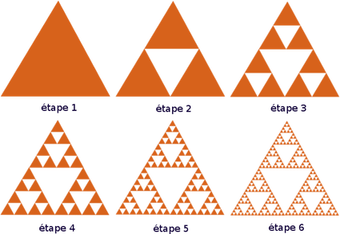
L’annexe présente comment tracer ces figures à l’aide du module turtle.
2.1.4. Exemples de structures de données récursives#
liste chaînée 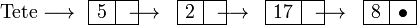
arbre, arbre binaire 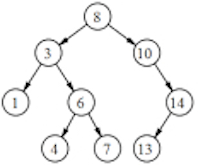
application : arbre du code Morse (point, tiret)

application : représentation d’une expression 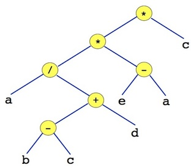
2.2. Intérêts de la récursion#
2.2.1. Avantage#
Une solution algorithmique récursive est souvent plus simple, plus lisible, plus facile à prouver qu’une solution itérative
exemple caractéristique : les tours de Hanoï (voir exercice de td) 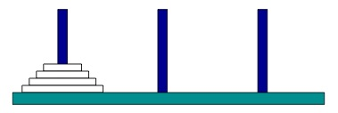
Animation de résolution :
{kind=link}
2.2.2. Inconvénient#
L’exécution de la solution récursive est plus compliquée
gestion d’une pile d’appels de fonctions : la pile d’exécution
L’exécution de la solution récursive peut provoquer des débordements de la mémoire
2.2.3. Paradigme diviser pour régner#
On divise le problème en des sous-problèmes similaires, indépendants, de taille moindre
et ce “récursivement”
jusqu’à obtenir un problème suffisamment simple ou de taille suffisamment petite pour le résoudre.
Par “récursivement”, on entend répéter la division de chaque sous-problème
“taille moindre” : la \(n\) taille est réduite par division par un entier supérieur ou égal à 2, ie. \(n \to n/2\) ou \(n \to n/3\) ou …
“problèmes indépendants” : la solution d’un sous-problème issu d’une division ne dépend pas des autres sous-problèmes.
Le “problème suffisamment simple ou de taille suffisamment petite” permet de terminer ces divisions.
Il fournit la première solution d’un sous-problème similaire
Cette solution est utilisée pour construire successivement les solutions du problème dont le sous-problème est issu, ie. le problème de la division précédente.
Cette approche diviser pour régner conduit à un algorithme récursif par construction !
Exemples caractéristiques d’algorithmes diviser pour régner dont on connaît déjà des versions itératives.
recherche dichotomique dans un ensemble trié
exponentiation (dite) rapide :
\(x^{2p} = (x^p)^2\) et
\(x^{2p+1} = x \times (x^p)^2\)
Dans ces 2 exemples, chaque étape découpe en 2 moitiés (ou presque) le problème initial.
Rmq. La réduction de la taille par division est caractéristique des approches diviser pour régner. Elle permet d’obtenir des complexités meilleures que les solutions récursives où la taille diminue linéairement : \(n \to n-1\) ou \(n \to n-2\) …
2.3. Fonctions numériques récursives#
Une définition, deux écritures équivalentes
forme itérative
\(n ! = 1 \times 2 \times \dots \times (n-1) \times n\)
forme récursive
\(n ! = n \times (n-1) ! \textbf{ avec } 0! = 1\)
Remarque : ces définitions ont un sens pour \(n>0\). La valeur de \(0!\) doit être définie de façon supplémentaire.
Warning
Bien différencier en quoi ces 2 écritures sont différentes.
2.3.1. Factorielle : forme itérative#
def f(n : int) -> int:
"""Calcul de factorielle n -- version itérative
entrée : n >= 0
sortie n!
"""
res = 1
for i in range(2,n+1):
res = res * i
return res
print("3! =", f(3))
print("1! =", f(1))
3! = 6
1! = 1
# bien que non défini a priori
print("0! =", f(0))
# et même n'importe quoi !
print("-3! =", f(-3))
0! = 1
-3! = 1
Warning
ATTENTION : il faudrait vérifier la validité du paramètre effectif
Exercice#
pourquoi ?
comment ?
Une pré-condition exprimée avec un assert permet de garantir que l’appel de la fonction s’effectue selon les hypothèses de son écriture : ici \(n >= 0\).
def f(n : int) -> int:
"""Calcul de factorielle n -- version itérative
entrée : n
sortie n!
"""
assert n >= 0
res = 1
for i in range(2,n+1):
res = res * i
return res
2.3.2. Factorielle : forme récursive#
On applique la définition récursive : \(n ! = n \times (n-1) !\)
Oui, oui ! On a oublié de définir \(0 !\).
On l’écrit quand même …
Premier essai (qui plante :)#
def f(n : int) -> int:
"""Calcul de factorielle n -- version récursive
entrée : n >= 0
sortie n!
"""
return n * f(n-1) # récursion
L’exécution suivante déclenche l’erreur :
RecursionError: maximum recursion depth exceeded
print("1! =", f(1))
---------------------------------------------------------------------------
RecursionError Traceback (most recent call last)
/var/folders/32/9hkmzrf11t38ckpktjnyfsfc0000gn/T/ipykernel_24491/1127868052.py in <cell line: 1>()
----> 1 print("1! =", f(1))
/var/folders/32/9hkmzrf11t38ckpktjnyfsfc0000gn/T/ipykernel_24491/3422208276.py in f(n)
4 sortie n!
5 """
----> 6 return n * f(n-1) # récursion
... last 1 frames repeated, from the frame below ...
/var/folders/32/9hkmzrf11t38ckpktjnyfsfc0000gn/T/ipykernel_24491/3422208276.py in f(n)
4 sortie n!
5 """
----> 6 return n * f(n-1) # récursion
RecursionError: maximum recursion depth exceeded
Note
INFO: python limite à 1000 le nombre d’appels récursifs
Heureusement … ce qui nous sauve ici !
Terminaison : pour arrêter les appels récursifs !!!!#
def f(n : int) -> int:
"""Calcul de factorielle n -- version récursive
entrée : n >= 0
sortie n!
"""
if n == 0: # terminaison
return 1
else:
return n * f(n-1) # récursion
print("3! =", f(3))
print("1! =", f(1))
print("0! =", f(0))
3! = 6
1! = 1
0! = 1
Analyse du code récursif
2 instructions return :
la première retourne une valeur terminale
c’est la solution d’un problème “suffisamment simple”
la seconde provoque un appel récursif (à elle-même) avant d’effectuer un quelconque calcul !
en effet l’opérande de droite dans la multiplication n’est pas encore connu …
l’évaluation de l’opérande de droite
f(n-1)constitue l’appel récursif du traitementla multiplication
n * f(n-1)est la construction du résultat à partir du résultat de l’appel récursif
Autre écriture avec 1 seul return :
def f(n : int) -> int:
"""Calcul de factorielle n -- version récursive avec un seul return
entrée : n
sortie n!
"""
if n == 1: # terminaison
res = 1
else:
res = n * f(n-1) # récursion
return res
print("3! =", f(3))
print("10! =", f(10))
3! = 6
10! = 3628800
Enfin l’écriture équivalente suivante explicite la récursion et la construction.
def f(n : int) -> int:
"""Calcul de factorielle n -- version récursive explicite
entrée : n
sortie n!
"""
if n == 1: # terminaison sur le problème suffisamment simple
res = 1
else:
app_rec = f(n-1) # appel récursif sur un problème de taille moindre
res = n * app_rec # construction de la solution du problème
return res
print("3! =", f(3))
print("10! =", f(10))
3! = 6
10! = 3628800
Rmq sur la validité de ces 3 écritures récursives.
Même dans ces versions récursives, il faut protéger le traitement des appels avec des arguments invalides. Comme précédemment, on ajoute l’assertion :
assert n >= 0 avant le début du traitement.
Bien comprendre les appels récursifs !#
Deux solutions :
Facile : utilisons pythontutor pour calculer \(5 !\)
Plus lourd : on va, de façon exceptionnelle, mettre des affichages dans le corps de la fonctions récursive pour bien comprendre. Pour cela, on décortique bien la fonction.
def f(n: int) -> int:
"""Calcul de factorielle n -- version récursive
entrée : n >= 0
sortie n!
"""
# pour compter les imbrications des appels
global nb
# on met a jour indent avant chaque return
nb = nb + 1 # on ajoute .... à chaque appel
indent = nb * "...."
print(indent, "entrée dans f(", n, ")")
if n == 1:
print(indent, "terminaison : on renvoit 1 pour n = ", n)
nb = nb - 1 # on enleve .. avant un return
return 1
else:
print(indent, n,"* f(", n-1,") = ?")
print(indent, "appel de f(", n-1,")")
r = f(n-1)
print(indent, "on a calculé f(", n-1, ")")
p = n * r
print(indent, "on a fait le produit ", n,"* f(", n-1,")")
print(indent, "Retour de la valeur", p)
nb = nb - 1 # on enleve .. avant un return
return p # récursion
nb = 0
f(4)
print(nb)
.... entrée dans f( 4 )
.... 4 * f( 3 ) = ?
.... appel de f( 3 )
........ entrée dans f( 3 )
........ 3 * f( 2 ) = ?
........ appel de f( 2 )
............ entrée dans f( 2 )
............ 2 * f( 1 ) = ?
............ appel de f( 1 )
................ entrée dans f( 1 )
................ terminaison : on renvoit 1 pour n = 1
............ on a calculé f( 1 )
............ on a fait le produit 2 * f( 1 )
............ Retour de la valeur 2
........ on a calculé f( 2 )
........ on a fait le produit 3 * f( 2 )
........ Retour de la valeur 6
.... on a calculé f( 3 )
.... on a fait le produit 4 * f( 3 )
.... Retour de la valeur 24
0
Conseil
Bien regarder le moment où on effectue la première multiplication
Exercice :
Combien de variables locales
retpont été utilisées ?
Réponse :
Chaque appel à
f()introduit une nouvelle paireretpCes variables sont locales à l’appel concerné :
elles sont introduites et évaluées dans l’environnement (le contexte) de l’appel concerné
Ces notions seront approfondies plus loin.
2.4. Exponentiation entière (dite) rapide#
Objectif : calculer \(x^n\) où \(x\) est un réel et \(n\) un entier positif.
2.4.1. Une première récursion#
Elle est basée sur la relation récursive : \(x^n = x \times x^{n-1}\) pour \(n > 0\) et \(x^0 = 1\).
def expo(x: float, n: int) -> float:
'''calcule x**n : version récursive naturelle
entrées : x (float), n (int) >= 0'''
if n == 0:
return 1
else:
return x * expo(x, n-1)
expo(2.0 ,1000)
1.0715086071862673e+301
Exercice :
Ecrire une version itérative
Ecrire une autre version récursive avec 1 seul
returnEcrire une autre version récursive qui exhibe les étapes de récursion et de construction
2.4.2. Une seconde récursion rapide, beaucoup plus rapide#
Autre écriture de \(x^n\) avec des airs de dichotomie :)
\(x^{2p} = (x^p)^2\) – c’est simple et récursif !
\(x^{2p+1} = x \times (x^p)^2\) – c’est simple et aussi récursif, non ?
On passe de la puissance \(2p\) ou \(2p+1\) à la puissance \(p\). On divise donc successivement par 2 les tailles des calculs à effectuer. L’exponentiation rapide est un exemple de résolution selon une analyse diviser pour régner.
On a bien sûr besoin de la terminaison de cette écriture récursive : \(x^0 = 1\).
def expo_rapide(x: float, n: int) -> float:
'''calcule x**n : version récursive rapide
entrées : x (float), n (int)'''
if n == 0:
return 1
else:
r = expo_rapide(x, n//2) # appel recursif sur exposant moitié
if (n % 2 == 0): # construction si n est pair
res = r * r
else: # construction si n est impair
res = x * r * r
return res
expo_rapide(2.0, 1000)
1.0715086071862673e+301
Rmq.
L’écriture précédente s’appuie sur la division entière de python (
//). On peut calculerrsans ce soucier de sa parité :n//2sera toujours le quotient de la division euclidienne denpar2avec reste nul (cas pair) ou non (cas impair).L’écriture suivante est bien sûr possible et conduit au même traitement.
def expo_rapide2(x: float, n: int) -> float:
'''calcule x**n : version récursive rapide
entrées : x (float), n (int)'''
if n == 0:
return 1
else:
if (n % 2 == 0): # si n est pair
r = expo_rapide(x, n//2) # appel recursif sur exposant moitié
res = r * r # calcul du résultat
else: # si n est impair
r = expo_rapide(x, (n-1)//2) # appel recursif sur "exposant paire" moitié
res = x * r * r # calcul du résultat
return res
# une vérification ponctuelle de l'équivalence des 2 versions
assert expo_rapide(2.0, 256) == expo_rapide2(2.0, 256)
assert expo_rapide(2.0, 257) == expo_rapide2(2.0, 257)
def expo_rapide_aff(x: float, n: int, aff = False) -> float:
'''calcule x**n : version récursive rapide, version avec affichage
entrées : x (float), n (int)'''
if n == 0:
if aff:
print("terminaison")
return 1
else:
if aff:
print("appel pour n =", n)
r = expo_rapide_aff(x, n//2, aff) # apple récursif
if aff:
print("retour de n//2 :", r )
if (n % 2 == 0): # n est pair
res = r * r
if aff:
print("cas pair et res =", res)
else: # n est impair
res = x * r * r
if aff:
print("cas impair et res =", res)
return res
La version avec affichage de la trace du calcul récursif complet exhibe un nombre beaucoup plus faible d’appels récursifs (et donc de calculs) pour cette version (dite) rapide comparée à la version classique.
expo_rapide_aff(2.0, 256, True)
appel pour n = 256
appel pour n = 128
appel pour n = 64
appel pour n = 32
appel pour n = 16
appel pour n = 8
appel pour n = 4
appel pour n = 2
appel pour n = 1
terminaison
retour de n//2 : 1
cas impair et res = 2.0
retour de n//2 : 2.0
cas pair et res = 4.0
retour de n//2 : 4.0
cas pair et res = 16.0
retour de n//2 : 16.0
cas pair et res = 256.0
retour de n//2 : 256.0
cas pair et res = 65536.0
retour de n//2 : 65536.0
cas pair et res = 4294967296.0
retour de n//2 : 4294967296.0
cas pair et res = 1.8446744073709552e+19
retour de n//2 : 1.8446744073709552e+19
cas pair et res = 3.402823669209385e+38
retour de n//2 : 3.402823669209385e+38
cas pair et res = 1.157920892373162e+77
1.157920892373162e+77
Exercice
Combien d’appels récursifs ou de multiplications sont effectués dans l’exponentiation entière (classique) ?
Même question dans le cas de cette exponentiation entière rapide ?
Qu’en déduire sur la complexité asymptotique de ces 2 versions ?
(\(\star\)) Exercice
Exhibons que expo_rapide()est effectivement plus rapide que expo
On en profite pour utiliser le module timeit.
Ce module complète (et utilise) le module time déjà décrit dans le
chapitre Modules utiles pour :
automatiquement répéter la partie de code à mesurer (si elle prend très peu de temps) –> option
-nou automatiquement répéter les mesures et les analyser : garder la meilleure, regarder la moyenne … –> option
r
timeit peut s’utiliser depuis la ligne de commandes ou depuis l’interpréteur python (ici jupyter) par sous la forme d’une “fonction magique” reconnaissable à sa syntaxe %.
Rmq. Bien sûr, l’exécution de la cellule suivante n’est pas instantanée.
# timeit plus fiable : répète plusieurs mesures
%timeit expo(3,20)
%timeit expo_rapide(3,20)
print()
# répétition de 100 mesures
%timeit -n 100 expo(3,20)
%timeit -n 100 expo_rapide(3,20)
print()
# 5 répétitions
%timeit -r 5 expo(3,20)
%timeit -r 5 expo_rapide(3,20)
3.09 µs ± 120 ns per loop (mean ± std. dev. of 7 runs, 100000 loops each)
1.18 µs ± 25.5 ns per loop (mean ± std. dev. of 7 runs, 1000000 loops each)
2.98 µs ± 14.4 ns per loop (mean ± std. dev. of 7 runs, 100 loops each)
1.17 µs ± 8.32 ns per loop (mean ± std. dev. of 7 runs, 100 loops each)
3.03 µs ± 12.8 ns per loop (mean ± std. dev. of 5 runs, 100000 loops each)
1.18 µs ± 27.7 ns per loop (mean ± std. dev. of 5 runs, 1000000 loops each)
L’exécution sur ma machine donne un facteur multiplicatif de 3 environ entre ces 2 versions :
3.02 µs ± 30.3 ns per loop (mean ± std. dev. of 5 runs, 100000 loops each)
1.2 µs ± 30.1 ns per loop (mean ± std. dev. of 5 runs, 1000000 loops each)
2.5. Fibonacci ou l’inefficacité de la récursion#
La suite de Fibonaci est définie par une récurrence d’ordre 2 :
Ce qui nécessite de connaître 2 valeurs de départ : $\(F(0) = F(1) = 1.\)$
2.5.1. Solution récursive#
L’expression est naturellement récursive donc …
def fibo(n: int) -> int:
'''Fibonacci : solution récursive classique '''
if n == 0 or n == 1:
return 1
else:
return fibo(n-1) + fibo(n-2)
for i in range(10):
print(i,":", fibo(i))
0 : 1
1 : 1
2 : 2
3 : 3
4 : 5
5 : 8
6 : 13
7 : 21
8 : 34
9 : 55
Observons que cette solution récursive est beaucoup plus lente que la solution itérative.
def fibo_iter(n: int) -> int:
'''Une version itérative de Fibonacci'''
f0 = 1
f1 = 1
for i in range(2, n+1):
f = f0 + f1
f0 = f1
f1 = f
return f1
Rmq. Pourquoi ne pas avoir écrit return f ?
Réponse
Pour un traitement correct des cas n == 0 ou n == 1 car la variable d’accumulation f n’est définie que pour n >= 2.
On s’assure de la correction des 2 traitements.
for i in range(15):
assert fibo(i) == fibo_iter(i)
Et on compare les temps d’exécutions de ces 2 versions.
%timeit -r 5 fibo(15)
%timeit -r 5 fibo_iter(15)
264 µs ± 576 ns per loop (mean ± std. dev. of 5 runs, 1000 loops each)
975 ns ± 47 ns per loop (mean ± std. dev. of 5 runs, 1000000 loops each)
On observe ici un temps de calcul environ 300 fois supérieur avec la version récursive.
Pourtant n = 15 n’est pas une très grande valeur a priori.
Vous observerez que ce comportement se dégrade de plus de plus significativement quand n augmente …
Rmq. On remarque que timeit a automatiquement adapté sa mesure au temps d’exécution de chacune des versions : la version itérative est mesurée sur une exécution 1000 fois plus importante que la version récursive.
Pour d’abord expliquer pourquoi cette solution récursive est inefficace en pratique, étudions maintenant plus en détail comment s’exécute un appel récursif.
2.6. Appels récursifs : environnement, pile d’exécution, pile et arbre des appels#
On s’intéresse à des notions liées à la mise en oeuvre des appels de fonction dans le cadre récursif.
On en restera surtout aux principes, aux abstractions algorithmiques.
Les aspects plus détaillés de la mise en oeuvre (implantation du mécanisme d’appel de fonction) sont étudiés en deuxième année.
2.6.1. Environnement#
On rappelle que l’appel d’une fonction rompt la séquentialité du calcul.
l’appel déplace l’environnement d’exécution de l’appelant vers un nouvel environnement dédié à l’appelé.
le traitement de l’appel s’effectue dans cet environnement jusqu’à l’exécution d’un
return.ce
returntermine l’appel et permet de revenir à l’environnement de l’appelant pour continuer le traitement (en général l’affectation de la valeur retournée par l’appel).L’environnement de l’appelé n’a plus d’utilité et peut donc être “détruit”.
L’environnement créé par l’appel contient l’information qui répond aux questions suivantes.
Quelles sont les valeurs des paramètres effectifs de l’appel (nécessaires au traitement) ?
Où retourner le résultat de l’appel ? (une ou des adresses de retour)
Où stocker les variables locales nécessaires au traitement de l’appel ?
Le cas récursif. Chaque appel récursif nécessite de construire dynamiquement un nouvel environnement.
En pratique, on ne connaît pas le nombre de fois où une/des fonctions sont appelées.
Chaque environnement est donc conservé dans une structure de donnée adaptée à son stockage et aux traitements à effectuer : en pratique, ajouter un nouvel environnement (appel), supprimer un environnement (suite au return)
Cette structure de données est appelée la pile d’exécution ou la pile des appels.
2.6.2. Pile d’exécution#
La pile d’exécution est la mémoire associée nécessaire au stockage des paramètres d’appel, des adresses de retour, des variables locales.
Elle est gérée par le langage de programmation : une pile LIFO (last in, first out) de taille préfixée. Mais il y a un risque de débordement mémoire si les appels imbriqués trop nombreux – sans libération de la place occupée.
En python : 1000 appels au maximum ou trop volumineux
Utile en pratique ? Oui et pas qu’en cas de bug !
Imaginons par exemple, un paramètre tableau de grande taille réduit récursivement de 1 élément par 1 élément …
exemple : sommer récursivement les n valeurs d’un tableau.
Qui plus est si la récursion consiste en plusieurs appels : récursion multiple.
exemple : la suite de Fibonacci \(f(n+1) = f(n) + f(n-1)\).
Warning
En pratique : stack overflow ! est le message classique quand … ça ne va pas !
stack se traduit “pile” en français.
Pour cette année, on va introduire deux vues plus simples de cette pile d’exécution qui aident à mieux comprendre l’exécution d’un traitement récursif.
La pile des appels récursifs
L’arbre des appels récursifs
Ces “vues plus simples”, aussi appelées des abstractions algorithmiques, représentent la logique de fonctionnement de la pile d’exécution. Elles permettent de ne pas avoir à détailler pas toutes les caractéristiques de l’environnement de chaque appel.
2.6.3. Pile des appels#
La pile des appels est une abstraction algorithmique qui représente la logique de la pile d’exécution en se limitant à l’identifiant de chaque appel.
2.6.4. Arbre des appels récursifs#
L’arbre des appels récursifs est une autre abstraction algorithmique de l’ensemble des appels d’un traitement récursif.
Le parcours des noeuds d’un arbre se représente aussi avec une pile … d’où la connexion entre ces deux abstractions du traitement de la récursion.
2.6.5. Illustration sur la factorielle récursive#
Calcul de fact(4)
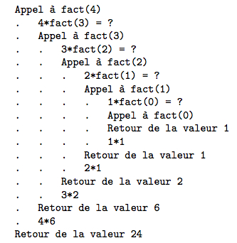
arbre des appels#
La représentation suivante exhibe l’arbre des appels récursif de f
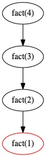
Ici, les calculs intermédiaires sont simples (1 multiplication) et on peut compléter cet arbre des appels en exhibant les opérandes de ces calculs.
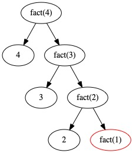
Rmq. (\(\star\)) Ces tracés sont obtenus à partir de petits codes python décrits dans cette annexe.
pile des appels#
L’évolution de la pile des appels lors du calcule de \(4!\) s’obtient en parcourant l’arbre des appels “en profondeur d’abord”.
On note fact( ) par f( ).
On représente l’évolution de la pile des appels sur un axe horizontal qui décrit le temps (de la gauche vers la droite).
La pile est représentée à chacun de ces changements d’état :
la pile est vide avant l’appel récursif principal
chaque appel récursif empile son contexte : on le note par l’appel lui-même
exemple :
f(4)est l’appel principal du calcul de \(4!\) et dénote aussi l’environnement de cet appel
chaque retour de valeur à l’appelant a pour effet de dépiler l’environnement de l’appelé
Ainsi la pile redevient vide après le traitement complet de l’appel principal.
Dans les affichages successifs :
chaque colonne verticale représente l’état de la pile à un instant donné de l’exécution récursive
le bas de la pile est le bas de la colonne
à chaque changement d’état de la pile, une nouvelle colonne est ajoutée à droite des précédentes
un nouvel appel est empilé ou un appel terminé est dépilé
la colonne la plus à droite représente l’état le plus récent de la pile
le numéro sous la pile aide à suivre l’évolution de la pile dans le temps
Ainsi les tracés successifs peuvent être vus comme une suite de photographies de la pile prises au fur et à mesure du traitement récursif. Le dernier tracé contient “tout le film” de l’évolution de la pile pour la totalité du traitement récursif.
Construction de la pile des appels du calcul de \(4!\) :
avant l’appel principal : la pile est vide
.
0
l’appel principal : on empile f(4)
. f(4)
0 1
dans f(4), l’appel de f(3) : on empile f(3)
f(3)
. f(4) f(4)
0 1 2
dans f(3), l’appel de f(2) : on empile f(2)
f(2)
f(3) f(3)
. f(4) f(4) f(4)
0 1 2 3
dans f(2), l’appel de f(1) : on empile f(1)
f(1)
f(2) f(2)
f(3) f(3) f(3)
. f(4) f(4) f(4) f(4)
0 1 2 3 4
f(1) est terminal (cet appel renvoie une valeur (1)) : on dépile f(1)
f(1)
f(2) f(2) f(2)
f(3) f(3) f(3) f(3)
. f(4) f(4) f(4) f(4) f(4)
0 1 2 3 4 5
f(2) est calculé et cet appel renvoie la valeur 1 x 2 : on dépile f(2)
f(1)
f(2) f(2) f(2)
f(3) f(3) f(3) f(3) f(3)
. f(4) f(4) f(4) f(4) f(4) f(4)
0 1 2 3 4 5 6
f(3) est calculé et cet appel renvoie la valeur 1x2x3 : on dépile f(3)
f(1)
f(2) f(2) f(2)
f(3) f(3) f(3) f(3) f(3)
. f(4) f(4) f(4) f(4) f(4) f(4) f(4)
0 1 2 3 4 5 6 7
f(4) est calculé et cet appel renvoie la valeur 1x2x3x4 : on dépile f(4)
f(1)
f(2) f(2) f(2)
f(3) f(3) f(3) f(3) f(3)
. f(4) f(4) f(4) f(4) f(4) f(4) f(4) .
0 1 2 3 4 5 6 7 8
la pile est vide et on a bien obtenu le résultat attendu (24).
environnements successifs pour factorielle(3)#
On peut le détailler un peu plus dans ce cas simple.
appel = f(3)
def f(n):
"""Calcul de factorielle n -- version récursive
entrée : n > 0
sortie n!
"""
if n == 1:
return 1
else:
r = f(n-1) # appel -> changement d'environnement
p = n * r
return p # return -> retour vers l'environnement de l'appelant
L’environnement de chaque appel est décrit par une colonne du tableau suivant.
. |
0 |
1 |
2 |
3 |
|---|---|---|---|---|
1 |
r=f(3) |
n=3 |
||
2 |
r=f(2) |
n=2 |
||
3 |
r=f(1) |
n=1 |
||
4 |
return 1 |
|||
5 |
p=2*1 |
|||
6 |
return 2 |
|||
7 |
p=3*2 |
|||
8 |
return 6 |
|||
9 |
r = 6 |
2.6.6. Illustration sur le calcul récursif de la suite de Fibonacci.#
On peut maintenant revenir sur les raisons de l’inefficacité du calcul récursif de la suite de Fibonacci.
arbre des appels#
Le calcul de
fibo(4)correspond à un parcours “en profondeur d’abord” de l’arbre des appels suivant.
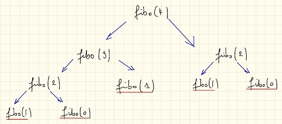
pile des appels récursifs#
On note fibo() par f()
Les appels récursifs sont empilés (avec leur environnement) dans une pile d’appels
Les appels avec terminaison permettent de dépiler l’appelant
L’appel principal est exécuté une fois la pile vidée
f(1) f(0)
f(2) f(2) f(2) f(2) f(2) f(1) f(1) f(0)
f(3) f(3) f(3) f(3) f(3) f(3) f(3) f(3) f(3) f(2) f(2) f(2) f(2) f(2)
f(4) f(4) f(4) f(4) f(4) f(4) f(4) f(4) f(4) f(4) f(4) f(4) f(4) f(4) f(4) f(4) f(4)
0 1 2 3 4 5 6 7 8 9 10 11 12 13 14 15 16
Rmq. Une évolution de la pile un peu différente de celle tracée ci-dessus peut aussi être envisagée.
En effet, l’évaluation de fibo(n-1) + fibo(n-2) (dans une affectation ou un return) provoque l’empilement de fibo(n-2) et fibo(n-1) avant leur traitement (dans un ordre arbitraire). Ainsi, la pile peut augmenter de 2 niveaux avant de redescendre d’un seul. Le traitement complet reste bien sûr équivalent.
Exercice. Tracer une telle évolution pour f(4).
2.6.7. Retour sur l’inefficacité du calcul récursif de Fibonacci#
Exercice : comptons le nombre d’appels à fibo() dans l’évaluation de fibo(4).
fibo(4) |
nbre d’appels |
|---|---|
fibo(0) |
2 |
fibo(1) |
3 |
fibo(2) |
2 |
fibo(3) |
1 |
total |
8 |
Ces évaluations intermédiaires répétées engendrent des sur-coûts en mémoire et en calcul qui dégradent l’efficacité de l’évaluation récursive de fibo( ).
Rmq. N’y-a-t-il pas des calculs inutiles ? (\(\star\)) Comment les éviter ?
environnements et pile d’exécution#
Profitons du python tutor pour visualiser l’enchaînement des appels et l’évolution de l’environnement :
2.6.8. Solution itérative#
On a déjà montré une solution itérative de ce calcul.
(\(\star\)) Exercice.
Proposer une solution itérative encore plus efficace que celle présentée.
Indication
Avancer dans l’itération en stockant toutes les valeurs déjà calculées (par exemple dans un tableau).
La solution itérative est plus efficace car elle évite de re-calculer les termes déjà calculés.
2.6.9. Exercice#
Reprendre ça sous http://pythontutor.com/live.html#mode=edit
2.7. Les tours de Hanoï#
2.7.1. Objectif#
Déplacer l’empilement de disques du piquet gauche au piquet droit en respectant les règles suivantes :
déplacer un seul disque à la fois
un disque ne peut être posé que sur un disque de diamètre supérieur On doit utiliser le piquet du milieu.
Situation initiale :
Situation finale : 
2.7.2. Solution récursive#
Analyse#
On note les piquets A, B, C de la gauche vers la droite. Départ = A, objectif = C
On note \(n\) le nombre de disques à déplacer ; ici \(n=4\)
On veut donc résoudre le problème des tours de Hanoi de taille 4 en allant de A vers C grâce à l’utilisation de B
notons la résolution de ce problème
Hanoi(4, A, C, B)plus généralement : Hanoi(n, départ, arrivée, intermédiaire)
Récursion
Si on déplace l’empilement complet avec les 3 disques supérieurs de A vers B en utilisant C (dur), ensuite on déplace le dernier (plus grand) disque de A vers C (facile), il ne reste qu’à déplacer l’empilement complet de 3 disques de B vers C en utilisant A (moins dur vu qu’on pu le faire à l’étape 1)
déplacer un empilement complet de 3 disques de A vers B (en utilisant C) =
Hanoi(3, A, B, C)déplacer le disque qui reste sur A vers C =
Hanoi(1, A, C, B)… oui: B ne sert à riendéplacer un empilement complet de 3 disques de B vers C (en utilisant A) =
Hanoi(3, B, C, A)
On tient la récursion ! 3 appels à Hanoi pour calculer Hanoi !!
Avec un graphique
On part de là : avec un empilement de 4 disques sur A à déplacer vers C 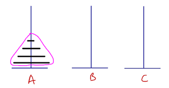
On identifie un empilement de taille inférieure : 3 disques regroupés en rose 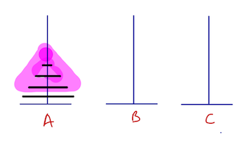
On suppose qu’on est capable de déplacer correctement l’empilement rose de A vers B (en utilisant C) 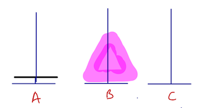
On déplace le dernier disque restant sur A vers C : il est à sa bonne place 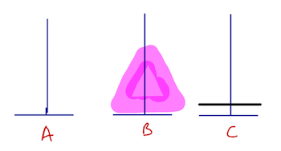
Comme deux étapes avant, on suppose qu’on est capable de déplacer correctement l’empilement rose de B vers C (en utilisant A). L’empilement rose est bien placé maintenant 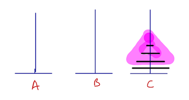
et le problème initial est bien résolu ! 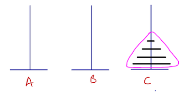
Terminaison pour la récursion
on termine quand on sait résoudre le problème car il est suffisamment simple :
on déplace un disque
c’est
Hanoi(1, ...)
Remarque : pour une solution itérative, une terminaison naturelle serait “quand tous les disques ont été déplacés”, i.e. quand le piquet de départ est vide
Déplacer \((n-1)\) disques : étape dure ?
NON : on “retombe” sur la résolution de Hanoi pour un nombre de disque diminué de 1 …
ce qui devrait à un moment ne plus laisser aucun disque à déplacer :) On formalisera plus tard cette analyse de la terminaison de la solution récursive.
Codage#
Yapluka !
On commence avec hanoi0 pour exhiber un détail technique
def hanoi0(n: int, depart, arrivee, interm) -> None:
'''tours de hanoi : déplacer n disques de
depart vers arrivee en utilisant interm
(et en respectant les règles de déplacement du pb des tours de Hanoi)
'''
if n > 0:
hanoi0(n-1, depart, interm, arrivee)
hanoi0(1, depart, arrivee, interm)
hanoi0(n-1, interm, arrivee, depart)
L’appel suivant déclenche une erreur.
hanoi0(4, A, C, B)
---------------------------------------------------------------------------
NameError Traceback (most recent call last)
/var/folders/32/9hkmzrf11t38ckpktjnyfsfc0000gn/T/ipykernel_24491/2035115461.py in <cell line: 1>()
----> 1 hanoi0(4, A, C, B)
NameError: name 'A' is not defined
En effet, les piquets A, B, C n’existent pas en tant qu’objet (variable) python.
On remarque que l’en-tête de la fonction était silencieuse à ce sujet …
Pour rendre effectif un traitement,
les piquets sont les caractères :
'A','B','C'il suffit alors d’indiquer le déplacement
(Hanoi(1, ...)par unprint:hanoi(1, depart, arrivee, interm)devientprint(depart -> arrivee)ce qui montre bien qu’interm est inutile quand le nb de disques égal 1
L’exécution de l’algo va donner tous les déplacements d’1 disque à appliquer au pb pour le résoudre
def hanoi(n: int, depart: str, arrivee: str, interm: str) -> None:
'''affiche les déplacements pour déplacer n disques de
depart vers arrivee en utilisant interm
(et en respectant les règles de déplacement du pb des tours de Hanoi)
'''
if n > 0:
hanoi(n-1, depart, interm, arrivee)
print(depart, '-->', arrivee)
hanoi(n-1, interm, arrivee, depart)
'''appel'''
hanoi(4, 'A', 'C', 'B')
A --> B
A --> C
B --> C
A --> B
C --> A
C --> B
A --> B
A --> C
B --> C
B --> A
C --> A
B --> C
A --> B
A --> C
B --> C
ATTENTION : il y a 0 return et 1 print … et pourtant l’algorithme termine et (semble) donner les déplacements qui résolvent le pb … C’est un biais introduit par la modélisation des piquets par des caractères (difficile de faire autre chose que des print sur des caractères). Vous reprendrez cette résolution lorsque vous saurez représenter les empilements de disques par … des piles.
''' appels simples pour se convaincre que ça marche et ...'''
#hanoi(1, 'A', 'C', 'B')
print("---------")
hanoi(2, 'A', 'C', 'B')
print("---------")
hanoi(3, 'A', 'C', 'B')
---------
A --> B
A --> C
B --> C
---------
A --> C
A --> B
C --> B
A --> C
B --> A
B --> C
A --> C
Exercice
Exécuter “à la main” les déplacements de hanoi(3)et hanoi(4) en numérotant les disques (1,2,3,…) et les piquets (A,B,C)
et vérifier que les problèmes sont effectivement résolus !
2.7.3. Observation … inquiétante#
# disques |
# déplacements |
|---|---|
2 |
3 |
3 |
7 |
4 |
15 |
Normal ?
\(n=1\) : OK pour hanoi(1) = 1 seul déplacement
\(n=2\) : 3 appels à hanoi(1) donc \(3\times1 = 3\)
\(n=3\) : 2 hanoi(2) + 1 hanoi(1) = \(2\times 3 + 1 \times 1 = 7\)
\(n=4\) : 2 hanoi(3) + 1 hanoi(1) = \(2\times 7 + 1 \times 1 = 15\)
et ainsi de suite …
Ca augmente assez vite !
On formalise cette observation en notant :
\(C(n)\) le nombre de déplacements nécessaires pour résoudre le problème des tours de Hanoi avec \(n\) disques. On a :
\(C(1) = 1\)
\(C(n) = 2 \times C(n-1) + 1\)
Cette récurrence a un comportement asymptotique exponentiel : on se convainc assez vite que \(C(n)\) augmente comme \(2^n\).
Se reporter à la dernière section du chapitre Complexité pour plus de détails.
Exercices
Coder un algo qui calcule le nombre de déplacements pour \(n = 2, 3, \dots, 12\) et pour plus ensuite
Modifier
hanoi()pour compter le nombre de déplacements total
a = 1
for i in range(1, 13):
c = 2*a + 1
print(i+1, 'disques -> ', c, 'déplacements')
a = c
print("Ca vous fait penser à quelque chose :) ?")
2 disques -> 3 déplacements
3 disques -> 7 déplacements
4 disques -> 15 déplacements
5 disques -> 31 déplacements
6 disques -> 63 déplacements
7 disques -> 127 déplacements
8 disques -> 255 déplacements
9 disques -> 511 déplacements
10 disques -> 1023 déplacements
11 disques -> 2047 déplacements
12 disques -> 4095 déplacements
13 disques -> 8191 déplacements
Ca vous fait penser à quelque chose :) ?
2.8. Conclusion#
2.8.1. Ce qui a été vu#
Les solutions récursives sont souvent plus faciles à écrire, à comprendre, à prouver.
Commencer par écrire la terminaison de la solution récursive.
La stratégie diviser pour régner conduit naturellement à une solution récursive – mais pas que !
Chaque appel récursif augmente l’espace mémoire nécessaire à la résolution.
Expliciter la pile de ces appels et son évolution lors de l’exécution
Des exemples importants de solutions récursives de problèmes dont on connaissait déjà des solutions itératives
calcul de factorielles, exponentiation entière, exponentiation rapide
recherche par dichotomie
2.8.2. Ce qui reste à voir#
Version récursive d’autres algorithmes importants
algorithmes de tri : tri fusion, tri rapide : voir chapitre “Trier”
Etablir la complexité d’algos récursifs
La fonction de complexité est une expression récurrente
la complexité de la résolution récursive d’un problème de taille \(n\) est fonction de la complexité de la résolution (récursive) du problème de taille réduite.
exemples :
factorielle, somme \(n\) valeurs, exponentiation : \(C(n) = C(n-1) + 1\) et \(C(1) = 1\)
exponentiation rapide, dichotomie (pour \(n=2^p\)) : \(C(n) = C(n/2) + 1\) et \(C(1) = 1\)
diviser pour régner en \(p\) problèmes de taille \(n/p\) : \(C(n) = p \times C(n/p) + f(p)\) et \(C(1) = 1\)
…
Traité en dernière partie du chapitre “Complexités”
\(\star\) Prouver la terminaison et la correction de ces algos récursifs
Traité dans le chapitre “Prouver”
\(\star\) Dé-récursifier : récursif -> itératif (quand on peut)
voir par exemple les slides du cours de 2016 : http://perso.univ-perp.fr/langlois/images/pdf/ens/L1/s7-sl4.pdf
2.8.3. Compléments#
Des ressources utiles :
un mooc sur la récursivité (UPMC)